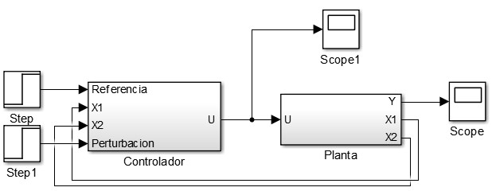
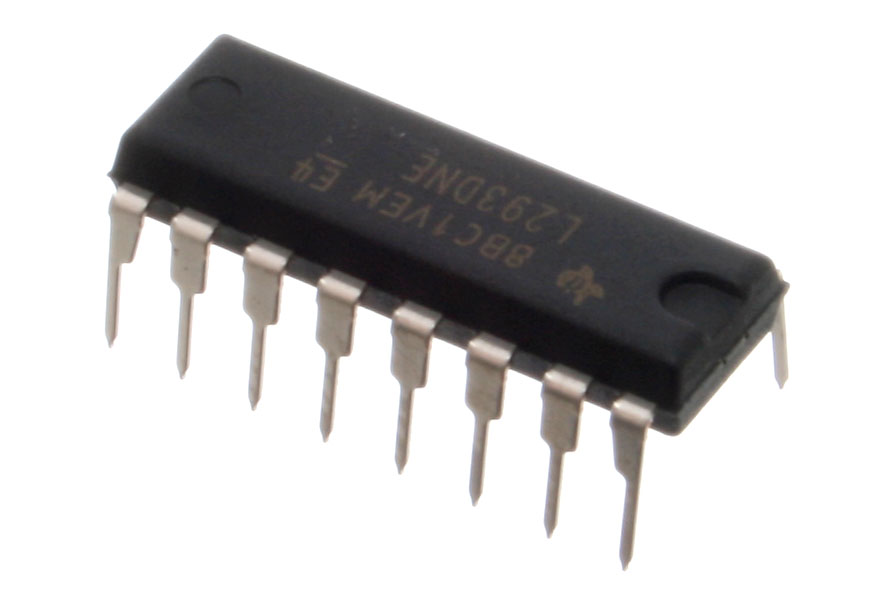
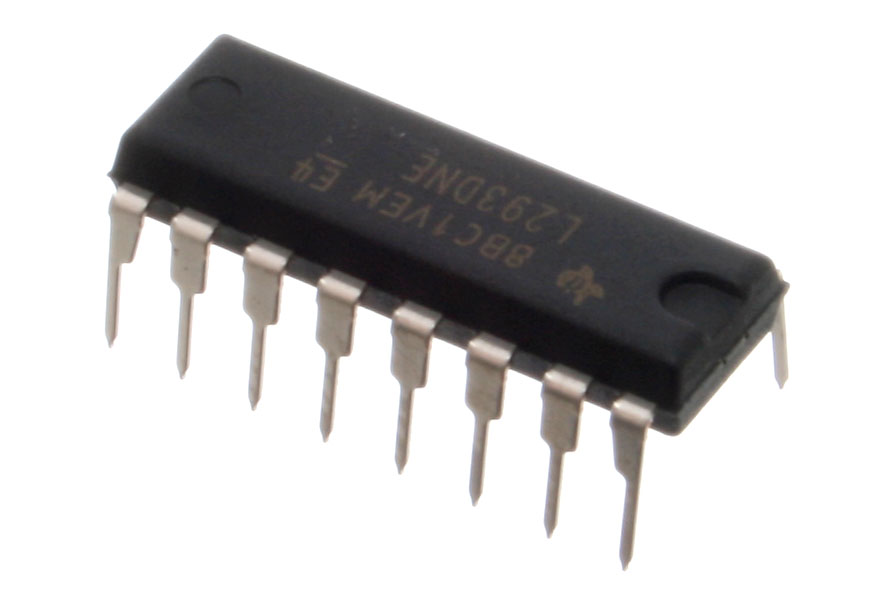

MATERIALES.
This automatic page generator is the easiest way to create beautiful pages for all of your projects. Author your page content here using GitHub Flavored Markdown, select a template crafted by a designer, and publish. After your page is generated, you can check out the new gh-pages branch locally. If you’re using GitHub Desktop, simply sync your repository and you’ll see the new branch.
DISEÑO DEL CONTROLADOR
Luego de tener el Mini-segway modelado matemáticamente y expresado en variables de estado, se procedió a diseñar la estrategia de control; como opciones se tuvieron dos técnicas, realimentación de estados simple y realimentación de estados con la adición de una acción integral.
Al diseñar los dos tipos de controladores y probarlos en el sistema, se observó que adicionar una acción integral producía los siguientes efectos:

Aunque el controlador integral posee varias ventajas respecto a la realimentación de estados simple; la única desventaja que posee es de fuerza mayor, dado que el controlador a implementar, debe actuar de manera rápida pues el punto de operación del sistema alrededor del cual se linealizó hace se entre en inestabilidad muy fácilmente.
Por la desventaja abordada anteriormente, se decidió implementar una ley de control por realimentación de estados simple; este controlador fue diseñado con ayuda de la herramienta MATLAB y simulado mediante SIMULINK. En el repositorio se pueden encontrar los archivos .m y .slx respectivamente.
El diseño del controlador requiere los siguientes pasos:
- Obtener la versión discreta del sistema
Esto se hace dado que la estrategia de control se implementara en un sistema basado en microcontrolador, el cual realiza el procesamiento de señales de manera discreta. En MATLAB se puede realizar la discretización por medio del comando c2d(), este comando realiza una discretización exacta del sistema teniendo en cuenta el tiempo de muestreo, el cual fue establecido mediante la siguiente formula:

Donde P es la magnitud del mayor polo que afecte el sistema.
Al nombrar la versión discreta del sistema se hace referencia tanto a las matices como a los polos deseados.
- Obtener las constantes de realimentación
Las constantes de realimentación son aquellas que nos ayudan a implementar la ley de control, pueden ser halladas mediante la igualación del polinomio deseado y el polinomio característico de laso cerrado o por algoritmos preestablecidos. En MATLAB se pueden encontrar dichas constantes con comandos como acker() o place().
En cuanto la simulación del sistema se implementó el siguiente esquema en SIMULINK:
En el cual, el scope1 nos permite observar la ley de control y así determinar que tanto esfuerzo de control se está ejerciendo, en el scope se visualiza el ángulo de salida tomado por el sistema.
Por el step1 emulamos las perturbaciones que pudiese llegar a tener el sistema, y se incluyó un step para variar la referencia, sin embargo, se debe tener claro que para nuestro sistema la referencia siempre serán 0°.
En las próximas imágenes se puede observar la salida del sistema ante diferentes perturbaciones y la referencia, se reitera, en 0°.
- Perturbación 0°
- Perturbación 5°
- Perturbación 10°
De las imágenes anteriores se concluye que el controlador diseñado es eficiente para esta aplicación, lo cual se corrobora al momento de su implementación. Al aumentar el ángulo de perturbación, el ángulo de salida del sistema tiende a alejarse de 0°, lo cual no ocurre con el controlador robusto; sin embargo, este error es muy mínimo y dado la acción de control cada tiempo de muestreo se hace “invisible”. Se tuvo en cuenta la simulación hasta 10°, dado que teóricamente esta es la región lineal del sistema.
Montaje
Para la realización del montaje del Seg-Way se tuvo en cuenta primeramente antes de realizarse cualquier base o demás, la capacidad no solo de peso sino también de distribución del mismo, para que quizás a la hora de probarlo no hubiesen inconvenientes no solo de peso sino de equilibrio. Para el montaje se hicieron uso de muchas herramientas para realizar los diferentes cortes y demás acciones que pudieran necesitarse a la hora de la construcción del Seg-Way. La parte estructural del Seg-Way es muy sencilla y consta de lámina de aluminio, un corte de madera, una varilla, dos ruedas, dos rodamientos (balineras) y la parte mecánica consta de un motor paso s paso y dos piñones,. Ahora bien la implementación paso a paso de los instrumentos anteriormente nombrados los veremos simplificados de la siguiente manera:
- Se realizó la incrustación del motor a la lámina de aluminio por medio de amarras metálicas.
- El paso siguiente fue implementar la varilla con su respectivo piñón, el cual se engrana al piñón del motor que se ven la imagen de la izquierda, también a la varilla se le introducen los rodamientos que van soldados a la lámina de aluminio en sus extremidades como se alcanza a ver en la imagen del lado derecho.
- Ahora el paso seguir fue instalar las ruedas, las cuales fueron ruedas un poco grandes para generar suficiente fuerza contraria y así sostuviese todo el peso, además de que el material de las mismas no generara tanta fricción para más facilidad en su desplazamiento.
- Ya generada la “primer planta” del segway se procedió a implementar el corte de madera en la parte superior del motor, para que no solo allí se pudiesen colocar herramientas fundamentales de trabajo como lo es el arduino y la protoboard. Para implementar dicha base se utilizaron dos tornillos largos y cuatro tuercas.
- Ahora bien esta es la implementación de todos los elementos unidos.
A continuación se mostrarán las imágenes del arduino y del circuito integrado que se utilizo para manejar la dirección del motor.
 

PROGRAMACION
La programación fue hecha por medio de la plataforma ARDUINO, esta nos ayudó a facilitar el proceso de escritura del programa, ya que contiene funciones predeterminadas como lo son.
- digitalWrite(pin,estado)
- analogWrite(pin,valor)
Siendo estas funciones las que remplazan el proceso de escritura por un pin, lo cual requiere primero de la declaración de los pines como salida y segundo escribir en ellos, aunque se escuche fácil se debe tener muy claro el funcionamiento del microcontrolador para realizar esta accion.
Este proyecto fue liderado por un microcontrolador ATmega328p, pues este está contenido en la placa arduino UNO; este microcontrolador posee 6 salidad pwm y una interfaz de comunicación llamada I2C, aspectos de interés para nuestro programa.
El concepto básico del programa es el siguiente.

Donde el sensor nos da la posición del segway la cual se quiere mantener en cero grados, posterior a ello la ley de control genera datos, los cuales tienen que ser interpretados para generar la señal PWM.
El proceso de sensar la posición se lleva a cabo por el integrado MPU 6050 el cual se comunica con la interfaz I2C; como este integrado es muy utilizado para medir posición y aceleración arduino incluyo una Liberia llamada wire.h la cual maneja las transmisiones por medio de dicha interfaz. A continuación se muestra el programa que captura los datos del integrado MPU 6050.
#include Wire.h
//Direccion I2C de la IMU
#define MPU 0x68
//Ratios de conversion
#define A_R 16384.0
#define G_R 131.0
//Conversion de radianes a grados 180/PI
#define RAD_A_DEG = 57.295779
//MPU-6050 da los valores en enteros de 16 bits
//valores capturados del MPU-6050
int16_t AcX, AcY, AcZ, GyX, GyY, Gy;
//datos transformados a angulos
float Acc[2];
float Angle[2];
float Gy[2];
void setup()
{
Wire.begin();
Wire.beginTransmission(MPU);
Wire.write(0x6B);
Wire.write(0);
Wire.endTransmission(true);
}
void loop()
{
//Leer los valores del Acelerometro de la IMU
Wire.beginTransmission(MPU);
Wire.write(0x3B); //Pedir el registro 0x3B - corresponde al AcX
Wire.endTransmission(false);
Wire.requestFrom(MPU,6,true); //A partir del 0x3B, se piden 6 registros
AcX=Wire.read()<<8|Wire.read(); //Cada valor ocupa 2 registros
AcY=Wire.read()<<8|Wire.read();
//Se calculan los angulos Y, X respectivamente.
Acc[1] = atan(-1*(AcX/A_R)/sqrt(pow((AcY/A_R),2) + pow((AcZ/A_R),2)))*RAD_TO_DEG;
Acc[0] = atan((AcY/A_R)/sqrt(pow((AcX/A_R),2) + pow((AcZ/A_R),2)))*RAD_TO_DEG;
//Leer los valores del Giroscopio
Wire.beginTransmission(MPU);
Wire.write(0x43);
Wire.endTransmission(false);
Wire.requestFrom(MPU,4,true); //A diferencia del Acelerometro, solo se piden 4 registros
GyX=Wire.read()<<8|Wire.read();
GyY=Wire.read()<<8|Wire.read();
//Calculo del angulo del Giroscopio
Gy[0] = GyX/G_R;
Gy[1] = GyY/G_R;
//Aplicar el Filtro Complementario
Angle[1] = 0.98 *(Angle[1]+Gy[1]*0.010) + 0.02*Acc[1];
Ahora como se ve al final del programa existe un filtro, este tiene la función de generarnos valores más o menos precisos, pues el MPU es muy inestable y a cualquier perturbación cambia su ángulo, por lo generar arrogando valores erróneos, los cuales son mejorados con este filtro el cual es conocido como filtro complementario.
Ahora teniendo los valores del sensor en las unidades requeridas por el control, se procede a llevar a un código el controlador.
Como primer factor a tener en cuenta es el tiempo de muestreo, este no se podía ejecutar por medio de la función delay, pues esta interrumpe inmediatamente la adquisición de datos y ejecución de demás programas necesario para ejecutar el control.
Por esto se utilizó una librería creada por un colaborador de arduino llamada TIMER-MASTER. Y esta tiene el siguiente formato.
#include Timer.h
Float Ts= #ms //tiempo de muestro
Timer t; // objeto de tipo Timer
void setup()
{
t.every(Ts,control); // se define la función que va a tener el objeto, el cual es ir a una función cuando se cumpla un instante de tiempo
}
Void loop()
{
t.update(); // función que actualiza el objeto t , y cuando se cumpla el tiempo de muestreo ejecuta la función control
}
Control
{
// controlador
}
La función control en sencilla pues esta solo por medio de una formula genera la ley de control, y al mismo instante proporciona la señal PWM que controla el motor, se debe tener en cuenta que los valores que relacionan la ley de control con el motor son obtenido por una caracterización entre dicho motor y los valores mínimos y máximos de la ley de control.
void control()
{
vel=(Angle[1]-GyYA)/(Ts); //se halla la velocidad
u=-K1*Angle[1]-K2*vel+Kr*(0); //ley de control
//condición de dirección de giro del motor
if(u>0)
{
AM= map(u, 78773,1101630, 190,255);// mapeo que relaciona la ley de control con la PWM
digitalWrite(8,HIGH); // direccion
digitalWrite(9,LOW);
analogWrite(10,AM); // se genera la PWM
}
else
{
AM= map(u, -1101630,78773, 255, 190);
digitalWrite(8,LOW);
digitalWrite(9,HIGH);
analogWrite(10,AM);
}
GyYA=Angle[1]; // se guarda el angulo actual para hallar la velocidad
}
como se observa en el codigo tambien existe una comparacion , la cual esta desiganda para realizar el cambio de giro del motor cuando lo es requerido, tambien vemos que utilizando el comando analogWrite() obtenemos una señal PWM siendo esta en la magnitud requerida por la ley de control para efectuar el toque necesario y asi controlar el segway